🎛️ G2B MIJN APPS
Alles op één plek — klik en werken in de browser, niks installeren. Zet deze pagina als favoriet (Ctrl+D).
🎵 Muziek maken
 🥁Beat Maker
🥁Beat MakerBeats bouwen in je browser — grid, lagen, eigen sounds
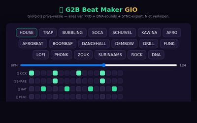
🔥Beat Maker GIO PRIVÉJouw privé-versie met alles erop en eraan
🧅Beat Maker GIO · LAGEN PRIVÉ+ = extra machine eronder — laag voor laag je beat stapelen
 💥G2B SMASH PRIVÉ
💥G2B SMASH PRIVÉBeat erin → promo-.mp4 eruit (TikTok/Shorts), 100% lokaal
 🎧G2B BAND PRIVÉ
🎧G2B BAND PRIVÉ3-in-1 super-plugin: SPEL mee · VERVOLG schrijft tweede helft · ARRANGEMENT = heel nummer .mid
 🎙G2B GELUID→MIDI PRIVÉ
🎙G2B GELUID→MIDI PRIVÉNeuri of fluit → MIDI-noten eruit + ANTWOORD-melodie → download .mid
 🎚️G2B MIXER v2 PRIVÉ
🎚️G2B MIXER v2 PRIVÉStems erin → hij luistert, maakt ruimte tussen sporen + master → schone mix.wav eruit
 🎲G2B STAPEL-DICE PRIVÉ
🎲G2B STAPEL-DICE PRIVÉOne-shots erin → 🎲 stapelt 2-3 op elkaar (sub/body/glans + stemming + dubbel) → lock wat goed is → .wav eruit
🎲STAPEL-DICE PRO PRIVÉ2-in-1: 🎲 stapel je shots én 🎹 dobbel synth-sounds (5 modi, slotjes, mutate, undo) → speel op keyboard → .wav eruit
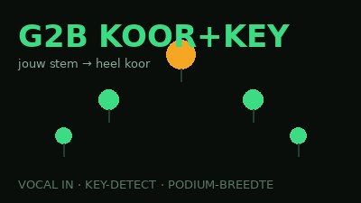
🎤G2B KOOR+KEY PRIVÉVocal erin → hoort zelf de toonsoort → heel koor eruit (terts/kwint/octaaf, podium-breedte) → koor.wav + stems .zip
 🥁G2B AIRDRUMS PRIVÉ
🥁G2B AIRDRUMS PRIVÉDrum in de lucht — webcam/muis/toetsenbord/MIDI → sounds + .mid naar Reason
 🎛️G2B OCHO NIEUW
🎛️G2B OCHO NIEUW808 pad-machine — je echte VST-sounds in de browser
 🎻G2B BEST-OF
🎻G2B BEST-OF16 beste instrumenten — echte VST-sounds in je browser
 🥁G2B PADS NIEUW
🥁G2B PADS NIEUW22 banken × 16 pads — je échte VST-sounds
 💥G2B BASSDRUM NIEUW
💥G2B BASSDRUM NIEUW15 kick-banken × 16 kicks
 🎸G2B BAS NIEUW
🎸G2B BAS NIEUW16 échte basnoten
 🎺G2B FUSION NIEUW
🎺G2B FUSION NIEUW18 fusie-instrumenten
 🎼G2B AKKOORD NIEUW
🎼G2B AKKOORD NIEUW6 akkoord-klanken
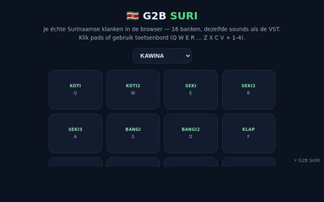
🇸🇷G2B SURI NIEUW16 Surinaamse banken × 16 pads
🌌AURA v6.0 STUDIO NIEUWHet volledige v6-ecosysteem — MIDI-Forge + alle modules in één portaal
🥁SURI-PADS & WORLD NIEUWPads + Surinaams in 1 engine — groene vakken stapelen
🎼AURA ALL-INSTRUMENTS NIEUWAlle instrumenten in 1 module met categorieën
💥BASS & DRUM 2-in-1 NIEUWSub, Reese, 808 & Bassdrum — Toon/Lengte aan de DSP
🎲AURA DICE SYNTH NIEUWDice-synth op stabiele Worklet — nooit hangende noten
🌙DREN STUDIO NIEUW323 unieke presets — naam en knoppen altijd synchroon
🎚️FX-RACK NIEUWKoor+Key + Master FX — knip ≤20%
✨G2B PROMPT-MAKER NIEUWTyp je geluid → synth-kandidaten → ✓ houden, morphen, .wav/.zip eruit
 🎚️MENGER-web PRIVÉ NIEUW
🎚️MENGER-web PRIVÉ NIEUWStems erin → schuifjes → pro-master wav eruit — in je browser
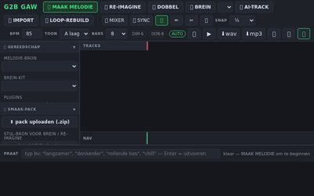
🎛️G2B MASTER NIEUWMix erin → 4 knoppen (TILT·GLUE·WARMTE·LUID) of AUTO → master wav eruit — de VST in je browser
🎛️GAW-LITE NIEUW4 tracks, al je browser-VST sounds + .mid/.wav export
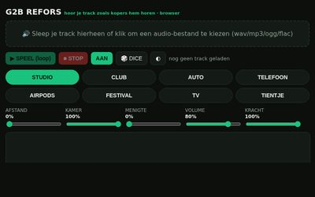
🔊G2B REFORS NIEUWG2B REFORS — hoor je track zoals kopers hem horen: 8 ruimtes
 🔪G2B SAMPLEX NIEUW
🔪G2B SAMPLEX NIEUWEigen sample erin → speelbaar instrument (toon + 16 chops)
 🎚️Beat Maker PRO
🎚️Beat Maker PRODe verkoop-versie voor kopers
🧅Beat Maker PRO · LAGEN+ = extra machine eronder — laag voor laag je beat stapelen
🎸G2B GIM BASSI PROVolle versie — song erin → bas+kick apart, 808-grid, .mid + wavs
 📻G2B Radio
📻G2B RadioJe eigen radio — 24/7 jouw muziek
 🎹Library
🎹LibraryBeats & packs beluisteren
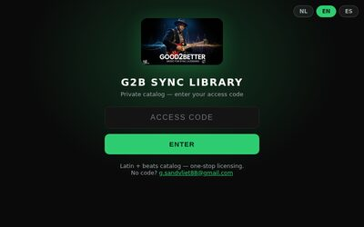
📋Sync-catalogJe sync-tracks overzicht
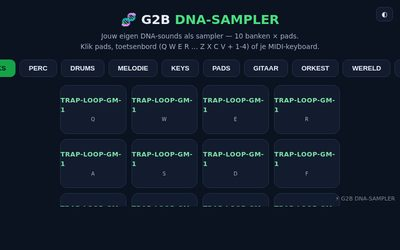
🧬DNA-SAMPLER PRIVÉ NIEUWJouw eigen DNA-sounds als sampler — 10 banken, MIDI-keyboard
🤖G2B BREIN MIJN PRIVÉJouw auto-score — bouwt zelf beats (basis → slag → SONG-arrangement .mid)
🧅G2B BREIN MIJN · LAGEN PRIVÉ+ = extra machine eronder — bass/kick op één, slag op de volgende, laag erbij
🧠G2B BREIN — browser NIEUW16-staps MIDI-generator (lite) — kit + toonladder, GENEREER/DICE, KRACHT+SWING → .mid + WAV
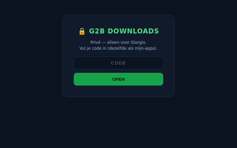
⬇️DOWNLOADS PRIVÉAlle installers, handleidingen en video's op één plek
🎮 Games & kids
 🏭GAME-FABRIEK PRIVÉ
🏭GAME-FABRIEK PRIVÉMaak complete spellen — 15 types, foto's, multiplayer
 🎓Schoolspelen
🎓SchoolspelenLeer-ladder groep 1 → genius, NL-stem
 🦁Alle spellen
🦁Alle spellen20 thema-spellen — met eigen foto als karakter
📚 Boeken & audio
 📚GS Books
📚GS BooksKinderboeken + woordspellen
 🦁Animal Heroes
🦁Animal HeroesHelden-boeken en avonturen
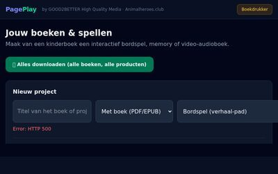
📖PagePlay LITE NIEUWEPUB erin → bord/memory/quiz/puzzel + eigen spel exporteren — in de browser
🛒 Winkels & promo
 🛍️Muziekwinkel
🛍️MuziekwinkelBeats, packs en plugins te koop
🎹BeatsLosse beats beluisteren & kopen
 🎁Gratis
🎁GratisGratis downloads
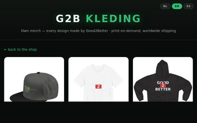
👕KledingG2B merch & prints
🎬Sync-bibliotheekMuziek voor film/tv/games (wachtwoord)
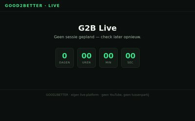
📺LiveLive-pagina
🧰Bundel-bouwerStel je eigen bundel samen
🧩WidgetEmbed-player voor andere sites
🗣️ Praten & web-tools
 🎙️Praat-web
🎙️Praat-webDicteer in de browser — nette tekst, NL/EN/ES, stem-commando's, eigen zinnen
 🌍Vertaal
🌍VertaalNL ↔ EN / ES vertalen, on-device in je browser
 ▦QR-maker
▦QR-makerQR-code van elke link — flyers, steunactie, kaartjes
📚 Cursussen
 🏭Les-Fabriek
🏭Les-FabriekMaak zelf een cursus — lessen + quiz + plaatjes/audio → download als 1 bestand
 🎓Beatmaker Basis
🎓Beatmaker BasisJouw eerste cursus: eerste beat in 7 lessen — quiz, score, diploma
📈 Zakelijk & marketing
 📈Marketing-Fabriek PRIVÉ
📈Marketing-Fabriek PRIVÉContacten, lijsten, e-mailcampagnes, stats
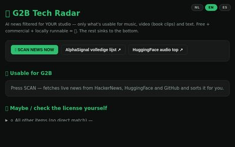
📡TechRadarNieuwe tools in de gaten
📝BriefingSync/custom briefing-formulier
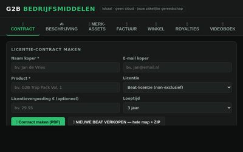
🏢Bedrijfsmiddelen lokaal :8010Contracten, facturen, merk-kit
🏭 Fabrieken & werk-apps (lokaal op je pc)
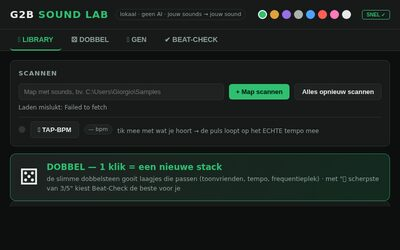
🎧Sound Lab lokaal :8200Geluid bewerken & packs bouwen
🎛️GAW lokaal :8600Jouw eigen DAW
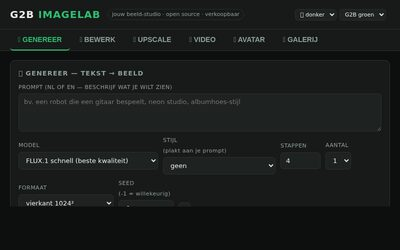
🖼️ImageLab lokaalBeeld-werkstation: maken, upscalen, achtergrond weg
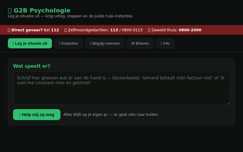
🧠Psychologie lokaal :8030NL hulp-instanties + brieven
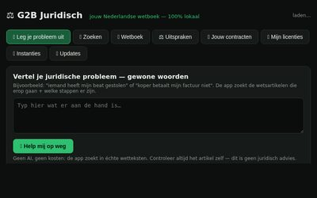
⚖️Juridisch lokaal :8020NL wetboek opzoeken
 📇CRM-Fabriek
📇CRM-FabriekLeads op een kanban-bord — nu in je browser
 📧Mail-Fabriek
📧Mail-FabriekBulk e-mail — via ProxiedMail of je eigen mail-app
 🔁Sequentie-Fabriek
🔁Sequentie-FabriekFollow-up reeksen met dag-timing
🔍SEO-Fabriek lokaalSite-scans & rapporten
 📊Sheet-Fabriek
📊Sheet-FabriekCSV's samenvoegen, filteren, schoonmaken
👁️Watcher-Fabriek lokaalBronnen + tech-radar in de gaten
🌊Flow-Fabriek lokaalWorkflows automatiseren
 🎯Lead-Fabriek
🎯Lead-FabriekBedrijven vinden per plaats + mail-check
 🧹Lijst-Fabriek
🧹Lijst-FabriekE-maillijsten schoonmaken + domein-check
 🔑Code-Generator
🔑Code-GeneratorLicentie-codes maken voor je verkoop-apps
 🧾Factuur-Maker
🧾Factuur-MakerNette factuur → print/PDF
🎬Show-Studio lokaalKanaal-Fabriek — video's met karakters
🎬Video-Fabriek lokaalFaceless video's genereren
🎤Stemmen-Studio lokaalNL tekst-naar-spraak
🎧Werkstation lokaalMaken → mixen → stemmen → afmaken
🥁Loop-Machine lokaalLoops & grooves bouwen
🔁Looper lokaalTrack → naadloze loop
🎚️Menger lokaalMap met sounds → nette one-shots
📦Packmaker lokaalSample-map → verkoop-pack ZIP
🧱Shot-Stapelaar lokaalOne-shots stapelen tot nieuwe sounds
🎯Hitmaker lokaalDe complete hit-fabriek
🤖Auto-Beat lokaalStijl + aantal → batch beats